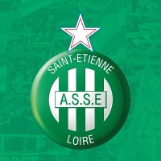

Equipos lideres de Ligue 1
Actualmente en la liga los equipos lideres son:
- Lille
- PSG
- Monaco
- O.Lion
Equipos que han sido campeones mas veces:
- A.S. Saint-Étienne
- Olympique de Marsella
- París Saint-Germain
- F. C. Nantes y A. S. Mónaco
Historia del equipo:
- A.S. Saint-Étienne
El Association Sportive de Saint-Étienne Loire (pronunciación en francés: /asɔsjɑsjɔ̃ spɔʁtiv də sɛ̃t‿etjɛn lwaʁ/), popularmente conocida como AS Saint-Étienne, o simplemente ASSE (pronunciación en francés: /a.ɛs.ɛs.ø/), es un club de fútbol francés de la ciudad de Saint-Étienne en Ródano-Alpes que fue fundado en 1933 y actualmente juega en la Ligue 1, la primera división del fútbol francés. Es el club francés con más títulos de la historia de la liga. El equipo juega sus partidos como local en el Stade Geoffroy-Guichard situado dentro de la ciudad.
- Olympique de Marsella
El Olympique de Marsella (Olympique de Marseille pronunciación en francés: /ɔlɛ̃pik də maʁsɛj/; Olimpic de Marselha pronunciación en occitano: /ɔlɛ̃pikə də mɑχsɛjə/), a veces llamado por su acrónimo OM en Francia, o simplemente como Marsella u Olympique en los países hispanohablantes, es una entidad polideportiva con sede en Marsella, Bocas del Ródano, Francia. Fue declarada oficialmente registrada por sus socios en agosto de 18992 con el objeto principal de la práctica y desarrollo del fútbol, si bien data sus orígenes como club polideportivo al año 1892 con su pionera sección de rugby.3 René Dufaure de Montmirail fue el principal artífice de su creación.
- París Saint-Germain
El Paris Saint-Germain Football Club, conocido popularmente por sus siglas PSG, es un club de fútbol con sede en París, Francia. Fue fundado el 12 de agosto de 1970 tras la fusión del Paris Football Club y el Stade Saint-Germanois. También es un club deportivo con secciones de balonmano, judo y deportes electrónicos, además de una sección femenina de fútbol y dos filiales, una masculina y otra femenina, ambas como equipos de formación para jóvenes talentos. Entre 1993 y 2000 tuvo un equipo de baloncesto, el cual ganó en 1997 la Liga de Francia, habiendo tenido también en los años 90´s secciones de boxeo y rugby.
- A.S. Saint-Étienne
- El Association Sportive de Saint-Étienne Loire (pronunciación en francés: /asɔsjɑsjɔ̃ spɔʁtiv də sɛ̃t‿etjɛn lwaʁ/), popularmente conocida como AS Saint-Étienne, o simplemente ASSE (pronunciación en francés: /a.ɛs.ɛs.ø/), es un club de fútbol francés de la ciudad de Saint-Étienne en Ródano-Alpes que fue fundado en 1933 y actualmente juega en la Ligue 1, la primera división del fútbol francés. Es el club francés con más títulos de la historia de la liga. El equipo juega sus partidos como local en el Stade Geoffroy-Guichard situado dentro de la ciudad.
- Olympique de Marsella
- El Olympique de Marsella (Olympique de Marseille pronunciación en francés: /ɔlɛ̃pik də maʁsɛj/; Olimpic de Marselha pronunciación en occitano: /ɔlɛ̃pikə də mɑχsɛjə/), a veces llamado por su acrónimo OM en Francia, o simplemente como Marsella u Olympique en los países hispanohablantes, es una entidad polideportiva con sede en Marsella, Bocas del Ródano, Francia. Fue declarada oficialmente registrada por sus socios en agosto de 18992 con el objeto principal de la práctica y desarrollo del fútbol, si bien data sus orígenes como club polideportivo al año 1892 con su pionera sección de rugby.3 René Dufaure de Montmirail fue el principal artífice de su creación.
- París Saint-Germain
- El Paris Saint-Germain Football Club, conocido popularmente por sus siglas PSG, es un club de fútbol con sede en París, Francia. Fue fundado el 12 de agosto de 1970 tras la fusión del Paris Football Club y el Stade Saint-Germanois. También es un club deportivo con secciones de balonmano, judo y deportes electrónicos, además de una sección femenina de fútbol y dos filiales, una masculina y otra femenina, ambas como equipos de formación para jóvenes talentos. Entre 1993 y 2000 tuvo un equipo de baloncesto, el cual ganó en 1997 la Liga de Francia, habiendo tenido también en los años 90´s secciones de boxeo y rugby.
A.S. Saint-Étienne Olympique de Marsella París Saint-Germain  

Si necesitas mas informacion sobre la Ligue 1,haz click en el link de abajo: